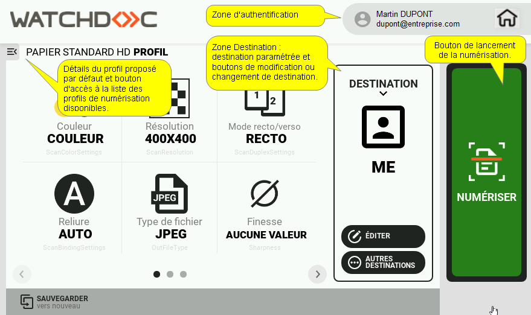
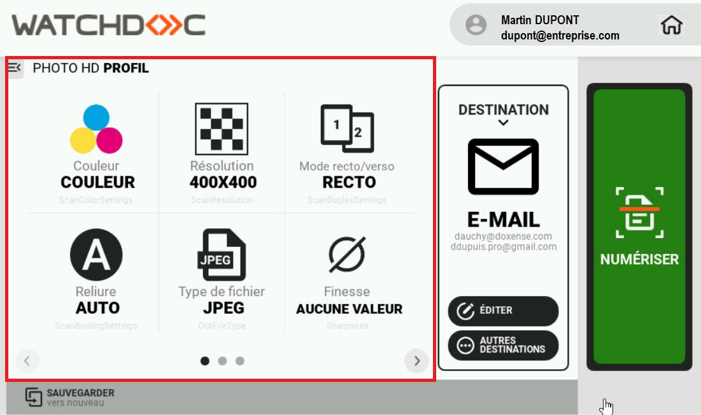
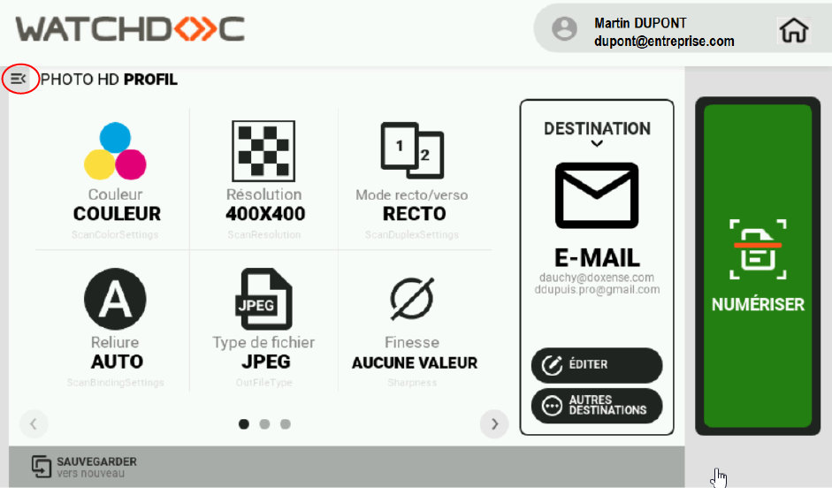
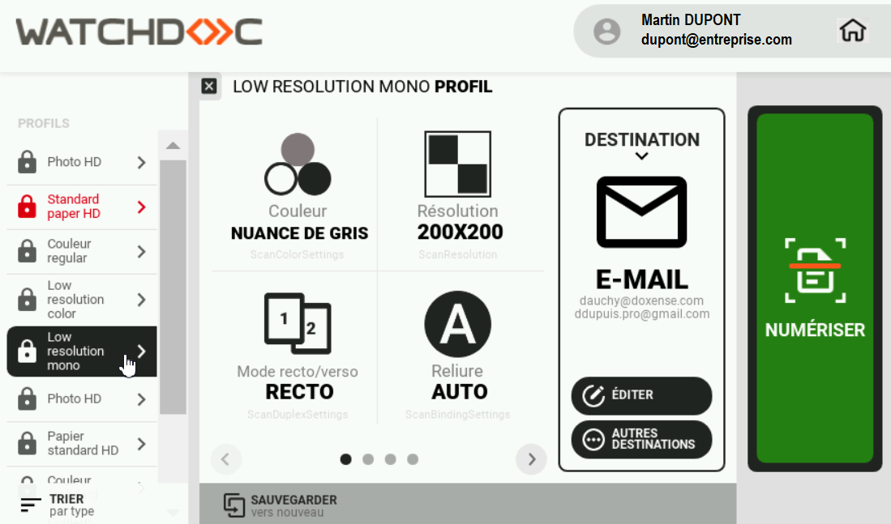
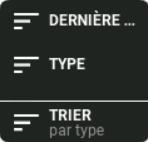
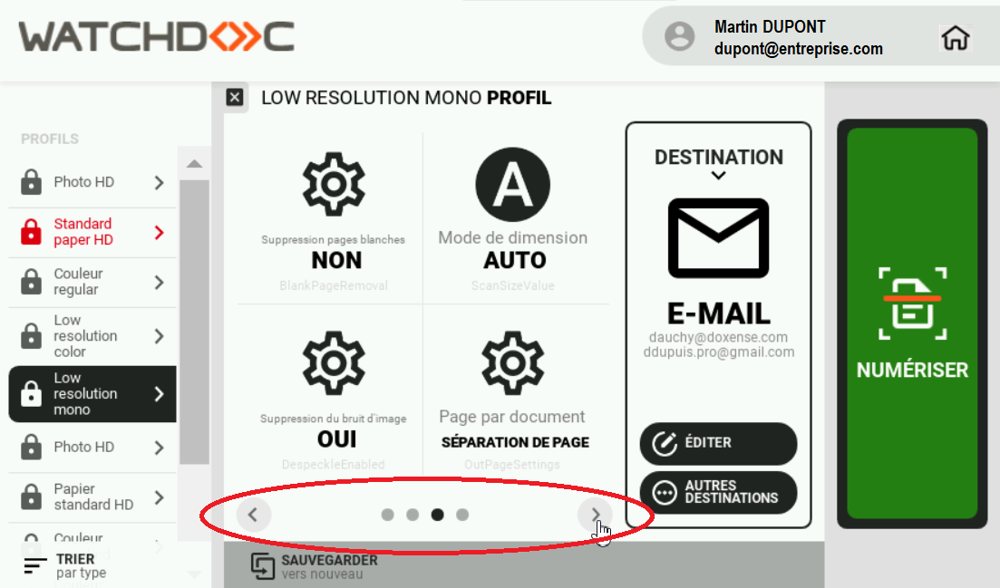
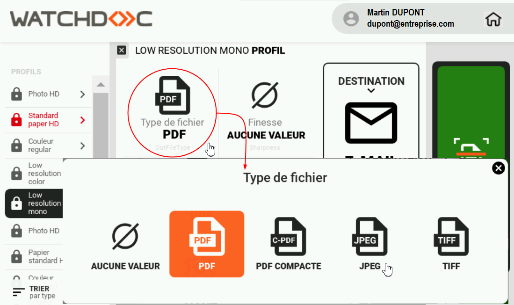
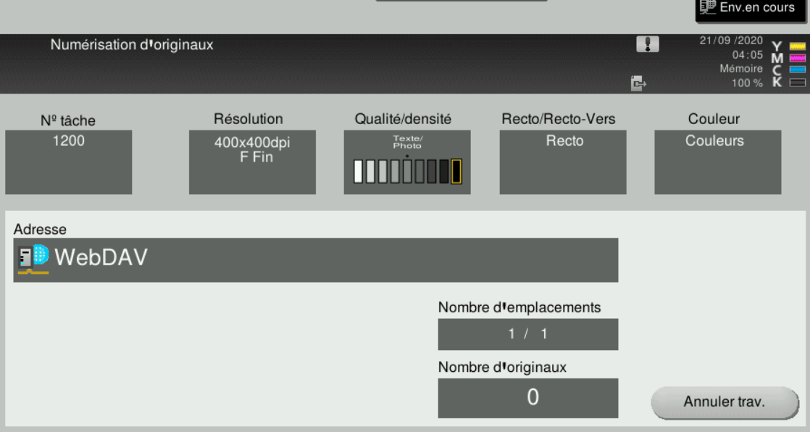
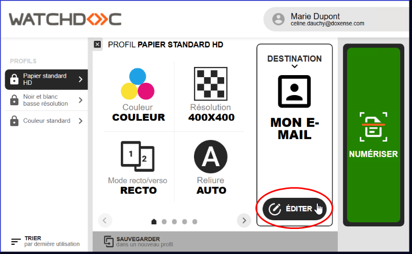
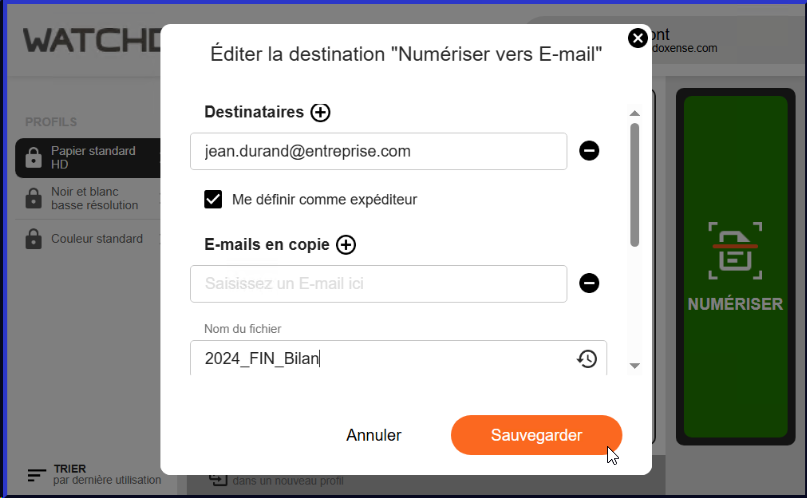

WESCan -
Utiliser
-
Depuis l'écran du périphérique, authentifiez-vous :
-
une fois authentifié, cliquez sur l'icône Applications de l'écran du périphérique pour accéder à la liste des applications disponibles sur ce périphérique ;
-
puis cliquez sur l'icone Watchdoc scan ;
èvous accédez à l'interface de numérisation.
Cette interface comporte :
-
l'encart d'authentification affichant l'identifiant ainsi que l'e-mail de l'utilisateur ;
-
la liste (abrégée ou détaillée) des profils de numérisation disponibles (profil (de scan / de numérisation) est une somme de paramètres (format, couleur, orientation, type du document, etc.) définissant la manière dont un document est numérisé.
Enregistré dans un fichier JSON, le profil de numérisation peut être modifié à l'aide de l'exécutable ScanProfilesCustomizer. N.B. : dans un domaine, pour garantir la disponibilité des profils de numérisation sur tous les serveurs qui dépendent du serveur maître en cas de panne de la base de données interserveur, il convient de dupliquer tous les fichiers JSON des profils de numérisation du serveur master sur les serveurs qui en dépendent.
Pour cela, copiez le dossier de profils de numérisation personnalisés (dans lequel vous avez enregistré vos profils personnalisés) de votre serveur master sur le(s) serveur(s) qui en dépendent.) ; -
la destination par défaut : une Destination est l'endroit où est envoyé le document numérisé. WEScan propose par défaut les destinations suivantes :
-
Scan vers Mon E-Mail : numérise et envoie la numérisation à l'adresse mail de l'utilisateur (ce dernier doit disposer d'un compte dans l'annuaire (Active Directory) avec une adresse e-mail valide) ;
-
Numériser vers E-Mail : numérise et envoie la numérisation à une adresse e-mail précisée par l'utilisateur ;
-
Numériser vers Dossier : numérise et envoie la numérisation dans un dossier prédéfini de l'espace de travail accessible à l'utilisateur ;
-
le bouton permettant de lancer la numérisation :

-
Pour numériser un document, il convient :
-
de choisir un profil ;
-
de choisir une destination ;
-
de lancer la numérisation.
Choisir un profil de numérisation
Dans la zone des profils, un profil (a priori le plus utilisé) est sélectionné par défaut : le détail de ses paramètres est affiché.
Dans le cadre central s'affichent les paramètres correspondant au profil :

-
Pour sélectionner un autre profil, cliquez sur le bouton pour accéder à la liste des profils ;

-
Les profils sont triés soit par type, soit en fonction de leur utilisation (derniers profils utilisés en premier).

-
Cliquez sur le bouton "Trier" pour définir l'ordre de tri,

-
Dans la liste, sélectionnez un autre profil : vous pouvez en parcourir les paramètre à l'aide des flèches :

-
pour modifier un paramètre, cliquez dessus et sélectionnez-en un autre dans la fenêtre présentée :

-
une fois le profil choisi et modifié (au besoin), cliquez sur le bouton pour refermer la zone de sélection des profils.
Choisir une destination
Dans la zone des destinations, une destination (a priori la plus utilisée) est sélectionnée par défaut : le détail de ses paramètres est affiché. Pour sélectionner une autre destination :
-
cliquez sur le bouton DESTINATION pour accéder à la liste des autres destinations disponibles : la destination courante s'affiche dans un cadre orange.
Si ce bouton ne s'affiche pas, c'est que l'administrateur a verrouillé la destination : dans ce cas, seule la destination configurée est disponible ; -
cliquez sur une autre destination pour la sélectionner :
-
les paramètres de la nouvelle destination sont affichés. Si vous souhaitez les modifier, cliquez sur le bouton ;
-
dans la boîte "Editer la destination "Nom_de_la_destination"", modifiez les paramètres souhaités (nom du fichier, corps du message, sujet du courriel, destinataires, e-mails en copie, chemin vers le dossier, etc.", puis cliquez sur ;
-
les nouveaux paramètres définis s'affichent dans la zone "Destination".
Numériser
Lorsque le profil et la destination sont choisis (et adaptés à votre besoin, si nécessaire), cliquez sur le bouton "Numériser" pour lancer l'opération.
Si aucun message d'erreur ne s'affiche, c'est que la numérisation s'est correctement déroulée : vérifiez la réception ou l'enregistrement du document.
N.B. : sur les périphériques Konica-Minolta, l'interface Numérisation des originaux s'affiche avant un retour à l'interface WEScan.
C'est un comportement normal du périphérique :

Modifier l'adresse mail de la destination
Pour modifier l'adresse de destination :
-
dans l'encart DESTINATION, cliquez sur Editer :

-
dans l'interface Editer la numérisation "Numériser vers E-mail",
-
Destinataire : saisissez l'email du destinataire. Pour ajouter un destinataire, cliquez sur le bouton puis complétez le champ ;
-
Me définir comme expéditeur : cochez la case pour inscrire l'email associée à votre compte utilisateur comme email d'expédition. Lorsque cette case n'est pas cochée, l'Adresse Service et le Préfixe Sujet définis lors de la configuration de la notification (section E-mails) qui s'affichent (cf. Configurer les notifications) ;
-
E-mails en copie : saisissez dans ce champ l'adresse mail de destinataires en copie si nécessaire ;
-
Nom du fichier : attribuez un nom au document numérisé envoyé ;
-
Sujet du courriel : attribuez un sujet au courriel envoyé ;
-
Corps du message : si nécessaire, saisissez un message pour accompagner le document numérisé envoyé.
-
-
cliquez sur Sauvegarder pour enregistrer la destination ;
-
cliquez sur le bouton NUMERISER :
